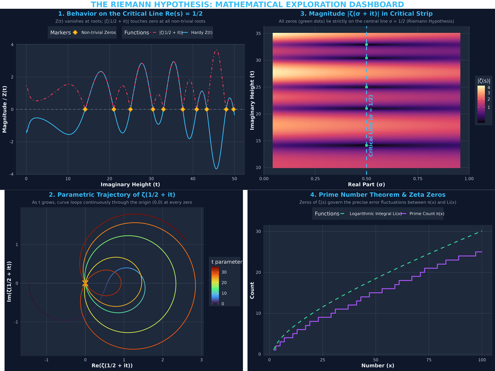
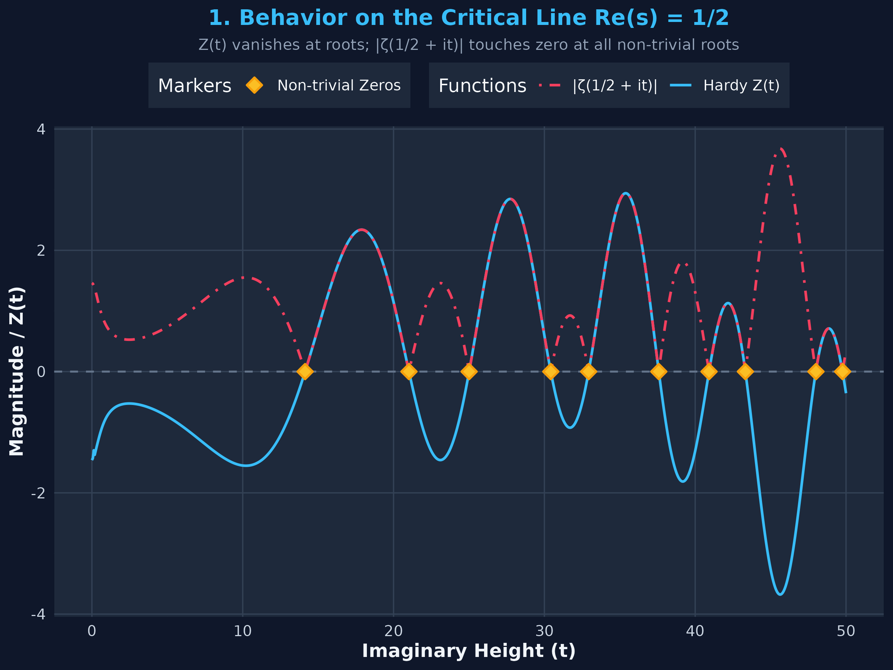
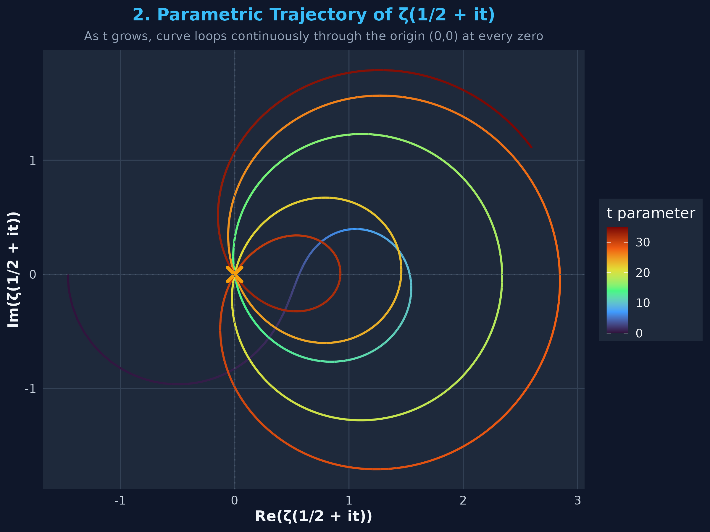
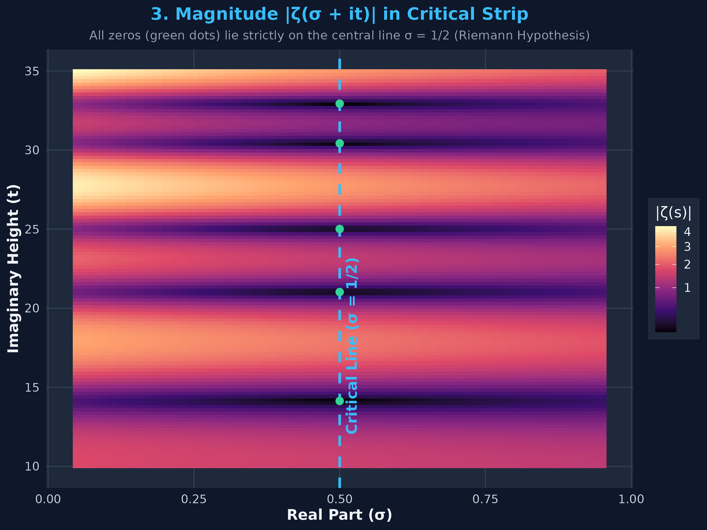
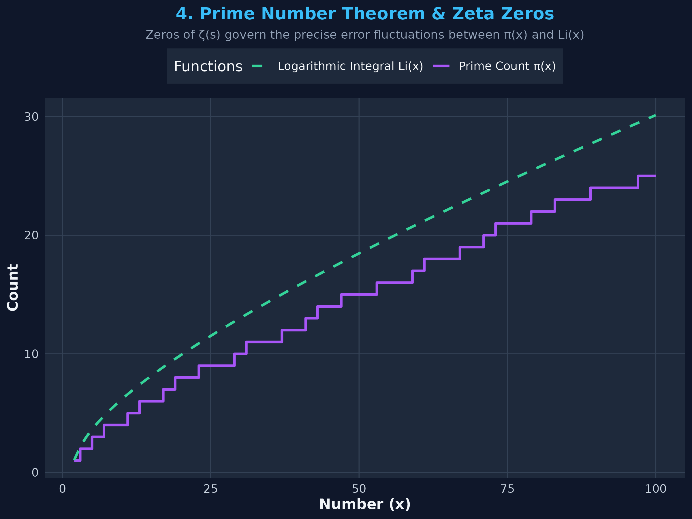

📌 Overview
The Riemann Hypothesis, proposed by Bernhard Riemann in 1859, is one of the most famous unsolved problems in mathematics and a Clay Mathematics Institute Millennium Prize Problem. It states that all non-trivial zeros of the Riemann Zeta Function \(\zeta(s)\) lie on the critical line:
$$\text{Re}(s) = \frac{1}{2}$$
Where \(s = \sigma + i t\) is a complex variable.
📊 Master Dashboard
The composite dashboard below was generated by evaluating \(\zeta(s)\) and Hardy's \(Z(t)\) function in R:

🔍 Detailed Visualizations
1. Behavior on the Critical Line \(\text{Re}(s) = 1/2\)

- Hardy's Z-function: \(Z(t) = e^{i \theta(t)} \zeta\left(\frac{1}{2} + it\right)\) is a real-valued function that vanishes at zeros of \(\zeta(s)\).
- First Non-trivial Zeros: \(t_1 \approx 14.1347, t_2 \approx 21.0220, t_3 \approx 25.0109, t_4 \approx 30.4249\).
- The modulus \(|\zeta(1/2 + it)|\) touches 0 at each yellow marker.
2. Parametric Trajectory in Complex Plane

- Plots \(x(t) = \text{Re}(\zeta(1/2 + it))\) vs \(y(t) = \text{Im}(\zeta(1/2 + it))\) as \(t\) increases from 0 to 35.
- As \(t\) evolves, the curve loops continuously through the origin \((0,0)\) at every zero.
3. Magnitude Landscape \(|\zeta(\sigma + it)|\)

- Heatmap grid across the critical strip \(0 < \sigma < 1\).
- All non-trivial roots (green markers) lie strictly on the central line \(\sigma = 0.5\).
4. Prime Distribution Connection

- Compares prime counting function \(\pi(x)\) with logarithmic integral \(\text{Li}(x)\).
- The non-trivial zeros govern the exact error term:
$$|\pi(x) - \text{Li}(x)| = O(\sqrt{x} \ln x)$$
🛠️ Numerical Implementation & Code
The calculation utilizes Borwein's accelerated algorithm (1995) for Dirichlet's Eta function \(\eta(s)\):
$$\zeta(s) = \frac{1}{1 - 2^{1-s}} \sum_{k=1}^N \frac{(-1)^{k-1} e_k}{k^s}$$
Run the script in terminal:
Rscript riemann_hypothesis.R